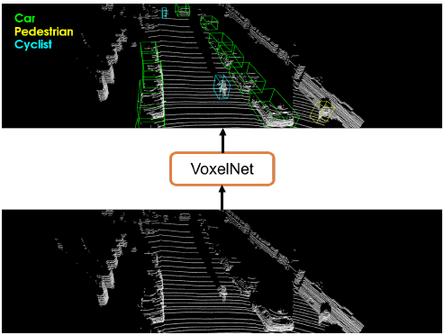
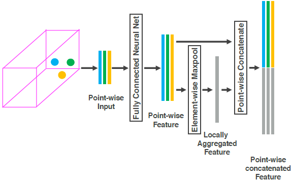
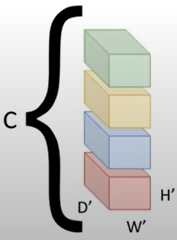
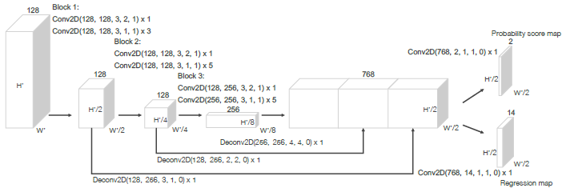

Point cloud based 3d object detection
Y. Zhou and O. Tuzel,Voxelnet, IEEE Conference on CVPR, pp. 4490-4499, 2018.
Abhishek Kumar Dubey
cs22mds15010
cs22mds15010
3/12/23
VoxelNet Introduction
it is a generic 3D detection framework that simultaneously learns a discriminative feature representation from point clouds and predicts accurate 3D bounding boxes
VoxelNet directly operates on the raw point cloud.

VoxelNet Architecture
The VoxelNet consists of three functional blocks
- Feature learning network
- Convolutional middle layers
- Region proposal network
Feature Learning Network
Voxel Partition
- Suppose the point cloud encompasses 3D space with range \(D, H, W\) along the \(Z, Y, X\) axes respectively.
- The resulting 3D voxel grid is of size \(D'=D/v_D, H'=H/v_H, W'=W/v_W\) where \(v_D,v_H,v_W\) defines the voxel size accordingly
- Point density in LiDAR point clouds is variable, resulting in varying numbers of points within each voxel.
Feature Learning Network cont …
Random Sampling
- A high-definition LiDAR point cloud typically has around 100k points.
- Directly processing all points can overload computing resources and create biased detection due to variable point density.
- To avoid this, a fixed number of points (T) is randomly sampled from voxels that contain more than T points.
- This sampling strategy has two purposes:
- computational savings and
- decreases the imbalance of points between the voxels which reduces the sampling bias, and adds more variation to training.
Feature Learning Network cont …
Stacked Voxel Feature Encoding
- let \({\bf V}\,=\,\{{\bf p}_i\,=\,[x_{i},y_{i},z_{i},r_{i}]^{T}\,\in\,\mathbb{R}^{4}\}_{i=1...t}\) as a non-empty voxel containing \(t <T\) LiDAR points.
- Here \({\bf p}_i\) contains \(XYZ\) coordinates for the \(i^{\text{th}}\) point and \(r_i\) is the received reflectance.
- Now find \({\mathrm{\bf V}}_{\mathrm{in}}\,=\,\{\;\mathrm{\hat {\bf p}_i}\,=\,[x_{i},y_{i},z_{i},r_{i},x_{i}-v_{x},y_{i}-v_{y},z_{i}-v_{z}]^{T}\in\mathbb{R}^{7}\}_{i=1\ldots t}.\) Here \((v_{x},v_{y},v_{z})\) is the local mean as the centroid of all the points in \({\bf V}\)
- Next, each \(\hat {\bf p}_i\) is transformed through the fully connected network (FCN) into a feature space.
Feature Learning Network. VFE cont …
- Information from point feature \({\bf f}_{i}\ \in\ \mathbb{R}^{m}\) is aggregated to encode the shape of the surface contained within the voxel
- The FCN is composed of a linear layer, a batch normalization (BN) layer, and a rectified linear unit (ReLU) layer

- Elementwise MaxPooling across all \(\bf f_i\) is used to get the locally aggregated feature \(\hat{\mathbf{f}}\ \in\ \mathbb{R}^{m}\)
Feature Learning Network. VFE cont …
- Now form the form the point-wise concatenated feature as \(\mathbf{f}_{i}^{o u t}\,=\,\left[\mathbf{f}_{i}^{T},{\tilde{\mathbf{f}}}^{T}\right]^{T}\,\in\,\mathbb{R}^{2m}.\)
- Finally we get \({\bf V_{\ o u t}}\ =\ \{{\bf f}_{i}^{o u t}\}_{i...t}.\)
- The output feature combines point-wise and locally aggregated features.
- Stacking VFE layers allows encoding of point interactions within a voxel, enabling the final feature representation to learn descriptive shape information.

- Voxel features, uniquely associated with their spatial coordinates, are obtained by processing only non-empty voxels, resulting in a sparse 4D tensor representation.
Convolutional Middle Layers
- Each convolutional middle layer applies 3D convolution, BN layer, and ReLU layer sequentially.
- The convolutional middle layers aggregate voxel-wise features within a progressively expanding receptive field, adding more context to the shape description
- Depending on the task this layer’ details can vary.

Region Proposal Network
- RPN is combined with the feature learning network and convolutional middle layers to form an end-to-end trainable pipeline. 
- The first layer of each block downsamples the feature map by half. via convolution with a stride of 2
- Followed by a sequence of convolutions of stride 1, BN and ReLU
- The output of each block is upsampled to a fixed size and concatenated to construct a high-resolution feature map.
Loss Function
- 3D ground truth box is parameterized as \((x_{c}^{g},y_{c}^{g},z_{c}^{g},l^{g},w^{g},h^{g},\theta^{g}),\) where \(x_{c}^{g},y_{c}^{g},z_{c}^{g}\) represent the center location, \(l^{g},w^{g},h^{g}\) are length, width, height of the box,\({\theta}^{g}\) is the yaw rotation.
- To retrieve the ground truth box from a matching positive anchor parameterized as \((x_{c}^{a},y_{c}^{a},z_{c}^{a},l^{a},w^{a},h^{a},\theta^{a})\) a vector \(\mathbf{u}^{*}\in\mathbb{R}^{7}\) containing below 7 elements are calculated as below: \[\begin{align*} &\Delta x={\frac{x_{c}^{g}-x_{c}^{a}}{d^{a}}},\Delta y={\frac{y_{c}^{g}-y_{c}^{a}}{d^{a}}},\Delta z={\frac{z_{c}^{g}-z_{c}^{a}}{h^{a}}},\\ &\Delta l=\log(\frac{l^{g}}{l^{a}}),\Delta w=\log(\frac{w^{g}}{w^{a}}),\Delta h=\log(\frac{h^{g}}{h^{a}}), \tag{1} \\ &\Delta\theta=\theta^{g}-\theta^{a} \end{align*}\] Where \(\;d^{a}\,=\,\sqrt{(l^{a})^{2}+(w^{a})^{2}}\)
Loss Function cont …
- Now we find loss as shown below \[\begin{align*} L&=\alpha{\frac{1}{N_{\mathrm{pos}}}}\sum_{i}L_{\mathrm{cls}}(p_{i}^{\mathrm{pos}},1)\\ &+\beta{\frac{1}{N_{\mathrm{neg}}}}\sum_{j}L_{\mathrm{cls}}(p_{j}^{\mathrm{neg}},0)\\ &+\frac{1}{N_{\mathrm{pos}}}\sum_{i}L_{\mathrm{reg}}({\bf u}_{i},{\bf u}_{i}^{*}) \tag{2} \end{align*}\]
- where \(p_{i}^{\mathrm{pos}}\) and \(p_{j}^{\mathrm{neg}}\) represent the softmax output for positive anchor \(a_{i}^{\mathrm{pos}}\) and negative anchor \(a_{j}^{\mathrm{neg}}\) respectively,
- \(\mathbf{u}_{i}\ \in\ \mathbb{R}^{7}\) and \(\mathbf{u}_{i}^{*}\ \in\ \mathbb{R}^{7}\) are the regression output and ground truth for positive anchor \(a_{i}^{\mathrm{pos}}\)
Network Details
Car Detection
- Point clouds within the range of \([-3,1]\times[-40,40]\times[0,70.4]\) meters along \(X,Y,Z\) respectively is considered.
- \(v_{D}\,=\,0.4,v_{H}\,=\,0.2,v_{W}\,=\,0.2\)
- \(D^{\prime}\;=\;10,\;H^{\prime}\;=\;400,\;W^{\prime}\;=\;352\)
- The maximum number of randomly sampled points in each non-empty voxel \(T\,=\,35\)
- For \(\mathrm{VFE}-1(7, 32)\) and and \(\mathrm{VFE}-2(32, 128)\) was used.
- The final \(\mathrm{FCN}\) maps \(\mathrm{VFE}\) output to \(\mathbb{R}^{128}\)
- Thus the feature learning net generates a sparse tensor of shape \(128\times10\times400\times352\)
Network Details, Car Detection cont …
Network Details, Car Detection cont …
- To aggregate voxel-wise features, three convolution middle layers was employed sequentially as \(\mathrm{Conv3D}(128, 64, 3,(2,1,1), (1,1,1)),\) \(\mathrm{Conv3D}(64, 64, 3, (1,1,1), (0,1,1)),\) and \(\mathrm{Conv3D}(64, 64, 3, (2,1,1), (1,1,1)),\)
- which yields a 4D tensor of size \(64\times2\times400\times352.\)
- After reshaping, size becomes \(128\times400\times352.\) and is input to RPN.
- Only one anchor size was used \(l^{a}\,=\,3.9.\,w^{a}\,=\,1.6.\,h^{a}\,=\,1.56\) meters centered at \(z_{c}^{a}\,=\,-1.0\) meters with two rotations, \(0^\circ\) and \(90^\circ\)
- Positive anchor: if it has the highest Intersection over Union (IoU) with a ground truth or its IoU with ground truth is above 0.6 (in bird’s eye view).
- Positive anchor: if the IoU between it and all ground truth boxes is less than 0.45.
- Set \(\alpha=1.5\) and \(\beta=1\) in equation \((2)\)
Training
- A similar network with different parameters, was used for Pedestrian and Cyclist Detection
- 2 anchors, smaller anchors, small stride to capture fine details etc.
- During training, stochastic gradient descent (SGD) with learning rate 0.01 was used for the first 150 epochs and decreased the learning rate to 0.001 for the last 10 epochs.
- Data Augmentation
- perturbation independently to each ground truth 3D bounding box together with those LiDAR points within the box.
- Global scaling.
Experiments
- VoxelNet evaluated on KITTI 3D object detection benchmark
- 7,481 training images/point clouds and 7,518 test images/point clouds
- Three categories: Car, Pedestrian, and Cyclist
- Detection outcomes evaluated based on three difficulty levels: easy, moderate, and hard
- Evaluation protocol based on object size, occlusion state, and truncation level
- 3,712 data samples for training and 3,769 for validation
- Hand-crafted baseline (HC-baseline) was implemented and trained to evaluate the importance of end-to-end learning.
- HC-baseline uses the bird’s eye view features described in Multi-view 3d object detection network for autonomous driving1 which are computed at 0.1 m resolution.
Novelty
- We do not need to predict separately for positive and negative.
- Extend VoxelNet for joint LiDAR and image-based end-to-end 3D detection.
Novelty
- Previous time frames can be taken into account improve the detection.

- VFE can be improved with the help of transformer positional encoding.
- One universal network instead of two.

WORK
- MVX-Net: Multimodal VoxelNet for 3D Object Detection
- ImVoxelNet: Image to Voxels Projection for Monocular and Multi-View General-Purpose 3D Object Detection
- MVX-Net: Multimodal VoxelNet for 3D Object Detection
- Group-Free 3D Object Detection via Transformers
- End-to-End Multi-View Fusion for 3D Object Detection in LiDAR Point Clouds (Dynamic Voxelization)
\[\mathcal{THANKS!}\]
IIT Hyderabad
Footnotes
X. Chen, H. Ma, J. Wan, B. Li, and T. Xia. Multi-view 3d object detection network for autonomous driving. In IEEE CVPR, 2017.